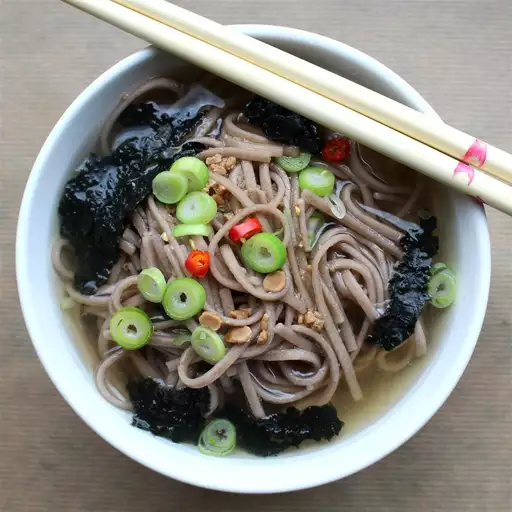

Home
Zaru Soba

Description
This is a Japanese cold noodle soup perfect for those hot summer days. It is filling and refreshing.
Ingredients
- 1 (8 ounce) package dried soba noodles
- 1 cup prepared dashi stock
- ¼ cup soy sauce
- 2 tablespoons mirin
- ¼ teaspoon white sugar
- 2 tablespoons sesame seeds
- ½ cup chopped green onions
- 1 sheet nori (dried seaweed), cut into thin strips (Optional)
Steps
-
Bring a lightly salted pot of water to a boil. Add soba noodles;
cook, stirring occasionally, until tender, 5 to 8 minutes. Drain.
Rinse with cold water to speed up cooling process.
-
Combine dashi, soy sauce, mirin, and white sugar in a small saucepan;
bring to a boil. Remove from heat and cool to room temperature, about 25 minutes.
-
Toss noodles with sesame seeds and divide among 4 serving bowls.
Spoon dashi sauce over noodles. Top with green onions and nori.
The recipe was took from AllRecipes!